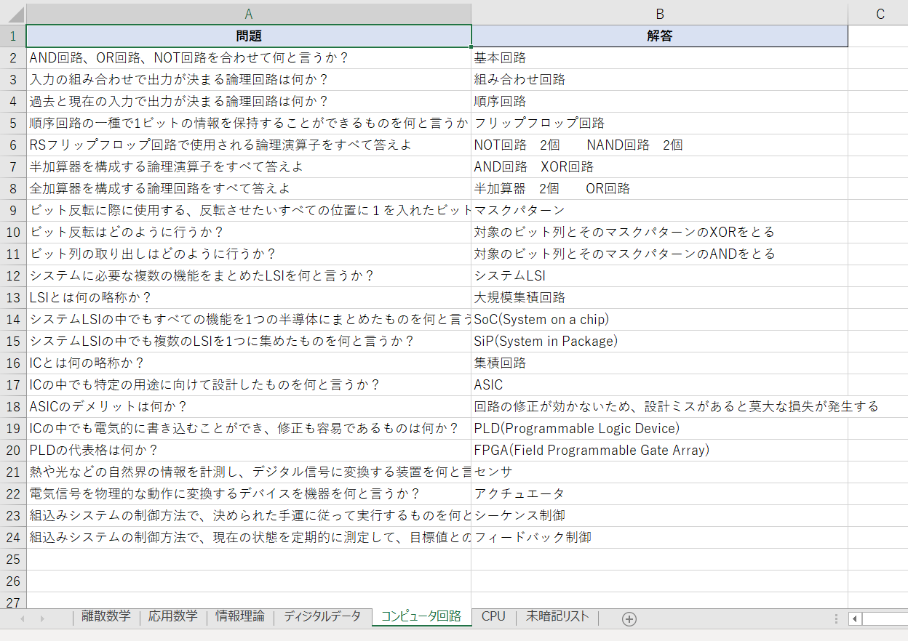
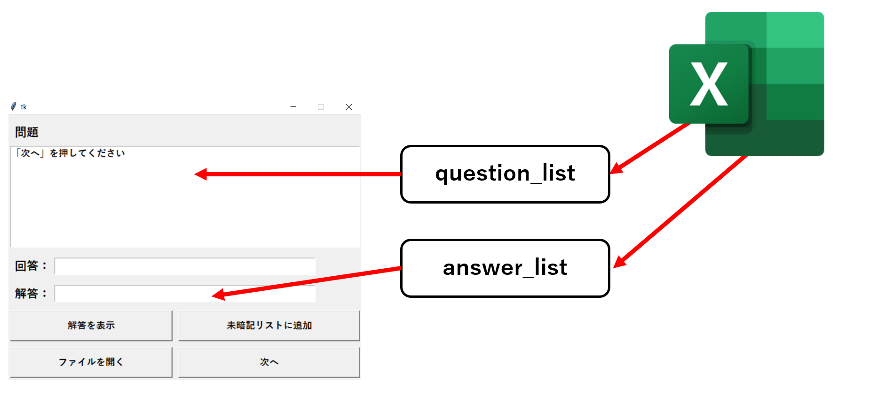

【Python】openpyxlとtkinterを使った一問一答プログラム
はじめに
僕は現在、応用情報技術者試験(AP)の勉強に励んでいます。
参考書を購入して毎日コツコツ勉強していますが、覚えることが本当に多い！！
そこで効率よく学習を行うために一問一答用のプログラムを作成することにしました。
今回はPythonのGUIライブラリであるtkinterとExcelライブラリのopenpyxlを使用しました。
大まかな仕組み
まずExcelファイルに問題と解答を記入していきます。僕の場合は使用している参考書の章立てに合わせて シートを分けています。
次にopenpyxlでExcelファイルとシートを読み込み、問題と解答を抽出します。抽出した問題と解答は それぞれリストに格納します。このリストから1つずつ取り出して、GUIに表示していきます。

基本的な仕組みはこんな感じです。
プログラムを実行すると、GUIの問題欄に問題が表示されます。次に回答欄に回答を入力します。
入力が終わったら「解答を表示」ボタンを押し解答を確認します。
確認後、「次へ」ボタンを押すことで次の問題が表示されます。
工夫した点
1.未暗記リスト機能で覚えられていない問題をピックアップすることができます。
2.誤字、脱字を発見したら「ファイルを開く」ボタンを押すことでExcelファイルを開き、修正することができます。
3.問題の順番は毎回異なるため、より効率のいい学習ができるようになります。